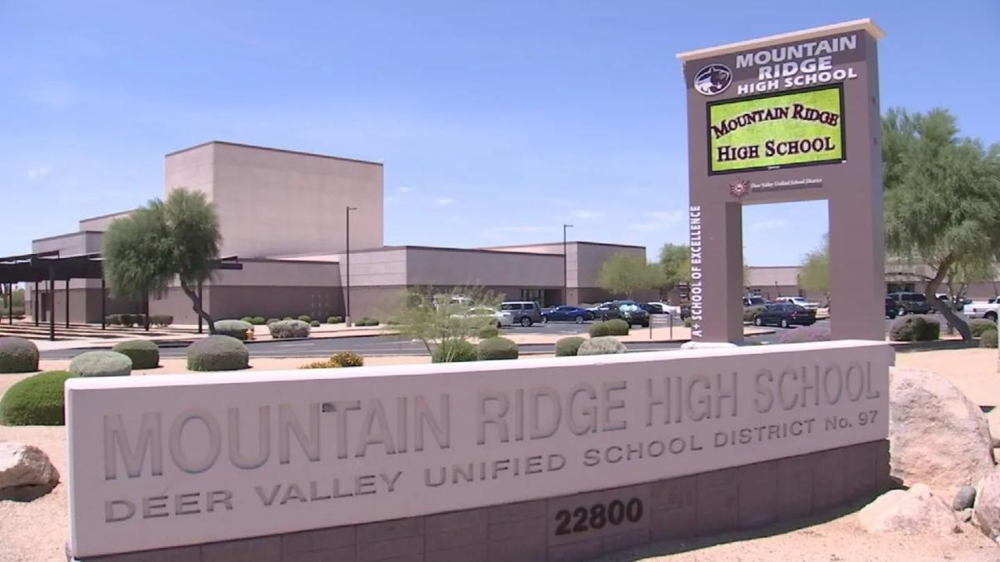
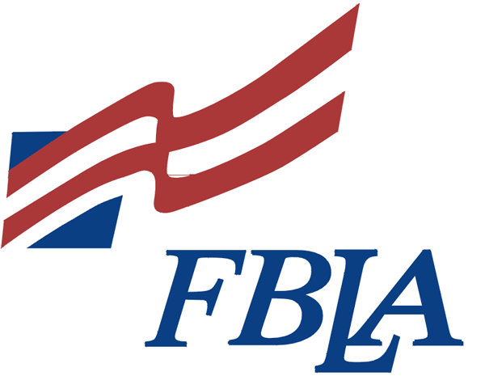
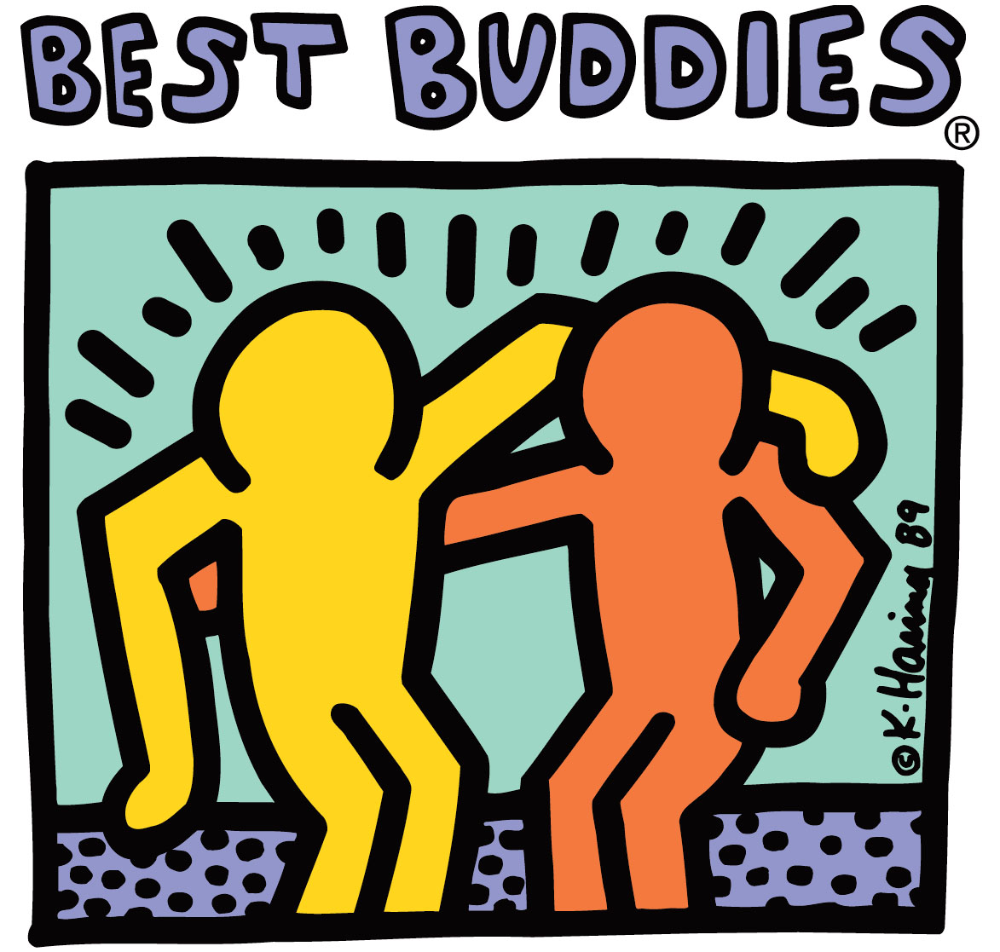

Basic Information
Name: Hailey Moya
Home Address: 22510 N. 71st Ln Glendale Az 85310
Email: haileymoya2003@gmail.com
Education
Mountain Ridge High School: Glendale Az
Expected Graduation Date: May 2021
Relevant Coursework: Spanish 1-2, Spanish 3-4 Honors, Computer Coding & Software Development
West-Mec NEC: Phoenix Az
two-year interactive program prepares students for a career as a software developer. The program teaches students how to design and develop software, build apps for phones, tablets, websites and write and test computer code.


Club Activities
FBLA (Future Business Leaders of America)
FBLA is the high school division of Future Business Leaders of America-Phi Beta Lambda, Inc. FBLA helps high school students prepare for careers in business through academic competitions (FBLA Competitive Events), leadership development, and educational programs.

Best Buddies
Best Buddies is a nonprofit 501(c)(3) organization dedicated to establishing a global volunteer movement that creates opportunities for one-to-one friendships, integrated employment, leadership development, and inclusive living for people with intellectual and developmental disabilities (IDD).
